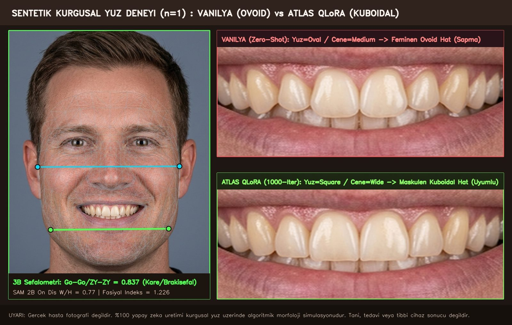

Introduction: the square jaw mistaken for oval
Dentistry has known one harmony principle for a century: the form of the anterior teeth speaks to the form of the face. In 1914 J. Leon Williams divided faces into square, tapering and ovoid types and classified teeth accordingly; in 1958 Frush and Fisher added the sex, personality and age (SPA) filter; in 1973 Lombardi set out the principles of visual perception, and in 2012 Paolucci and colleagues systematised the temperament-form match under the name visagism. A dentist applies these rules mostly without words: a wide, square male face does not get a rounded, short-lateral, open-embrasure “feminine” line.
What happens when you give the same face to an untrained (zero-shot) vision-language model? In the studio’s first run on the night of October 14 the answer was clear: a 31-billion-parameter local model (gemma4:31b) labelled a distinctly brachyfacial face face_shape = oval, jaw_width = medium and proposed a round-cornered ovoid form. The model was “seeing” the face but not measuring it, and because it did not measure, it reversed Williams’s 1914 warning.
This essay tests that observation at two scales: first on a locked test set of 32 faces never seen in training, then end to end on a single synthetic portrait that belongs to no real person. In the middle of the essay you can rotate the 478-landmark 3D wireframe and slide between the tooth lines the two models chose, under the same lip lock.
1. Setup: two scales, one locked test set
Model and training. The base model is Qwen2.5-3B-Instruct-4bit; training ran on an Apple Mac Studio (M3 Ultra, 96 GB) with MLX QLoRA (Hu et al. 2022; Dettmers et al. 2023) at two checkpoints, 400 and 1,000 iterations. The training data consists of rule-example pairs distilled from 113 peer-reviewed papers and book chapters plus the studio’s 478-landmark 3D cephalometric measurement pairs; none of the 32 test faces appeared in training, and the test set was locked before the experiment began.
Measurement pipeline. For every face, MediaPipe FaceMesh (Kartynnik et al. 2019) extracts a 478-landmark 3D mesh; bizygomatic width ZY-ZY (#234–#454) and bigonial width Go-Go (#172–#397) are measured in pixels; the Go-Go / ZY-ZY ratio is classified with Farkas’s (1994) anthropometric thresholds. The width/height ratio of the upper central incisor is measured by SAM 2B segmentation (Kirillov et al. 2023; Ravi et al. 2024). The model sees these measurements and must produce a single JSON decision: face shape, jaw width, target line (cuboidal/rounded), SPA sex filter and recommended form category.
Locked test (n = 32). Three arms: untrained vanilla, QLoRA 400 iterations, QLoRA 1,000 iterations. Each arm’s JSON decision on the same 32 faces was compared against the pre-registered threshold rule (Section 3).
Synthetic showcase (n = 1). For a publishable example we used no real patient photograph; we generated a wholly fictional portrait prompted as a 38-year-old man with a strong square jaw and Go-Go / ZY-ZY ≥ 0.83 (generation prompt and file SHA-256 digests are recorded in PROVENANCE.json). Both models ran end to end on this portrait; the chosen forms were placed in the same frame with photo-realistic enamel texture. The 4,686 pixels belonging to lips, beard, gingiva and lower teeth were kept identical in both outputs; only the line of the upper six anterior teeth changed.
2. Live module: 3D cephalometry and the morphology slider
Left: the 478-landmark 3D wireframe extracted from the synthetic portrait (drag to rotate; cyan ZY-ZY = 629.7 px, green Go-Go = 526.9 px, ratio 0.837). Right: the tooth line each model chose on the same face; the default tab is the 2x macro comparison of the untrained model and the QLoRA model. The “Original ↔ After Design” tab is a simulation, not a before/after treatment.

Not a real patient. 100% synthetic face · algorithmic morphology simulation, not diagnosis/treatment/medical device. Clinical decisions belong solely to the dentist.
Gerçek hasta fotoğrafı değildir. %100 sentetik/kurgusal model üzerinde algoritmik morfoloji simülasyonudur. Tanı, tedavi veya tıbbi cihaz sonucu değildir. Sonuçlar kişiden kişiye değişir; klinik karar hekime aittir.

N-Gn / ZY-ZY = 1.226.3. The four-layer architecture and its academic basis
To close the gap between what the model “sees” and what the dentist “measures”, we split the decision into four layers. Each layer has its own literature and its own numeric threshold; the model cannot skip them.
Layer 1 · Cephalometric ratios (Farkas 1994; Williams 1914).
Go-Go / ZY-ZY ≥ 0.82 → wide / square;< 0.74 → narrow / tapering; in between, ovoid. For vertical control,Tr-Gn / ZY-ZY(facial index). On the synthetic portrait the ratio is0.837, above the threshold: the face is in the square/wide class. The untrained model’s “oval” decision fails at this layer.Layer 2 · Visagism (Paolucci et al. 2012). Face form and temperament map to four types; in the strong / choleric type the centrals are horizontally rectangular and dominant, corners pronounced, incisal edge flat. In the dynamic and sensitive types corners soften and embrasures open. A square/wide face falls into the strong type at this layer.
Layer 3 · SPA filter (Frush & Fisher 1958). Sex, personality and age: for a man of 38 the disto-incisal angle is square, the lateral is close to the central in length, embrasures are near closed; in the feminine line the disto-incisal angle rounds, the lateral shortens, embrasures open. The ovoid line the untrained model chose fails at this layer too.
Layer 4 · Anterior tooth ratio and the golden proportion (Lombardi 1973; Levin 1978; Magne et al. 2003). The central
W/H = 0.77measured with SAM 2B sits at the lower edge of the range Magne reported for unworn teeth (roughly 0.78–0.85), which suits a broadened, flat-edged form. The lip lock (4,686 pixels) is this layer’s boundary: the form changes, the lip frame does not.
4. Results table (n = 32): vanilla → 400 → 1,000 iterations
The same 32 locked faces, three arms. Each cell is the number of decisions that agree with the threshold rule.
| Criterion | Vanilla (untrained) | QLoRA 400 iterations | QLoRA 1,000 iterations |
|---|---|---|---|
| Valid decision JSON | 3.1% (1/32) | 100% (32/32) | 100% (32/32) |
face_shape · face-shape threshold class | 0.0% (0/32) | 46.9% (15/32) | 90.6% (29/32) |
jaw_width · mandibular width | 0.0% (0/32) | — | 100.0% (32/32) |
hedef_hat · cuboidal / rounded target line | 0.0% (0/32) | — | 100.0% (32/32) |
| SPA sex filter | 3.1% (1/32) | — | 100.0% (32/32) |
| 1st recommended form category | 0.0% (0/32) | — | 100.0% (32/32) |
Source: Atlas experiment log, October 15, 2026 (locked test set; in the 400-iteration arm only JSON validity and face shape were measured; “—” means not measured). The figures are reported here from Atlas’s experiment report; the raw run log is not published with the essay.
Three things stand out. First, the vanilla model’s real problem is not misclassifying but mostly failing to classify at all: it produced no valid decision on 31 of 32 faces. Second, at 400 iterations the format was learned (JSON 100%) but the content was half done (face shape 46.9%). Third, at 1,000 iterations face shape jumped to 90.6% while the four derived decisions that depend on it (jaw width, target line, SPA, form category) reached 100%; even where the model stayed undecided on the face-shape label for 3 faces, it bound the line decision correctly through the threshold hierarchy.
5. The synthetic square face (n = 1): raw decisions of both models
| Layer | Measured | Value | Reading |
|---|---|---|---|
| 3D cephalometry | ZY-ZY (#234–#454) | 629.7 px | Reference bizygomatic width |
| 3D cephalometry | Go-Go (#172–#397) | 526.9 px | Go-Go / ZY-ZY = 0.837 (≥ 0.82 → wide / square) |
| 3D cephalometry | Facial index N-Gn / ZY-ZY | 1.226 | Balanced / square, lower face dominant |
| SAM 2B | Upper central W/H | 0.77 | Central ratio suited to a broad form |
Vanilla (gemma4:31b, zero-shot) | face / jaw / target line | oval · medium · rounded | Error: read the square jaw as oval/medium → feminine ovoid line (rounded corners, open V embrasures, short laterals) |
| ATLAS QLoRA (1,000 iterations) | face / jaw / target line | square · wide · cuboidal | Visagism strong/choleric + SPA (male, 38) → masculine cuboidal line (90° corners, flat horizontal incisal edge, closed embrasures) |
| Lip lock | preserved pixels | 4,686 | Lips, beard, gingiva, lower teeth identical in both outputs |
What matters here is that it is a single face. n = 1 is not evidence; it is a demonstration: it makes visible, through a dentist’s eye, what the statistic in the 32-face table means. The difference between the ovoid and cuboidal lines is not the colour or gloss of the tooth but the angle of the disto-incisal corner, the slope of the incisal edge and the openness of the embrasure; look at exactly those three places in the slider.
6. Phase transition or memorisation?
46.9% at 400 iterations, 90.6% at 1,000: a smooth fall in training loss followed by a jump in test accuracy after a threshold resembles the pattern Power and colleagues (2022) named “grokking” on small, rule-governed datasets. Three observations support that reading, one limits it:
- Support 1: The test set is locked and unseen in training; the gain cannot be explained by memorising the same faces.
- Support 2: Face shape stayed at 90.6% while the four decisions derived from it reached 100%; the model appears to have learned not the label but the rule that goes from label to line.
- Support 3: Valid JSON in the vanilla arm was 3.1%; the jump is therefore distinct from “learning the format”, which was complete at 400 iterations.
- Limit: Two checkpoints are not a curve. Without a test curve drawn from ten checkpoints every 100 iterations, the phase-transition claim stays at the level of “pattern resemblance”; this essay did not measure it.
7. Red team: the n = 1 anecdote, lookalike risk and regulation
Before publication we gave Grok Bot a red-team brief; it gave conditional approval and we accepted three objections:
- “Zero risk” is not written. A synthetic source and brand-free language are a measured improvement, not an absolute zero. The risk that the generated face resembles a real person (lookalike) was not measured by reverse image search in this round; this essay does not count that measurement as done.
- The default tab is the model comparison. Health-service advertising regulation ties post-hoc technological alteration of patient images and before/after presentation to strict conditions. Although this is a product demo, we applied the same caution: the default tab is “untrained model ↔ QLoRA”; the “original ↔ after design” tab is secondary and labelled “simulation”.
- No medical-device or clinical-decision-support claim. This is an algorithm experiment and a morphology simulation; it does not diagnose, does not prescribe treatment, does not promise a clinical outcome.
Grok Bot’s fourth warning concerned the essay itself: “Do not mix the n = 1 anecdote with the test-set figures; val_loss alone does not mean ‘it learned’.” That is why Sections 4 and 5 are kept apart and the loss curve is not used as evidence in this essay.
8. Verdict: five points
An untrained vision-language model sees the face; it does not measure it. Mistaking a square jaw for oval is not an error of opinion but an absence of measurement; failing to produce even a decision on 31 of 32 faces is the sign of it.
Once the rule becomes a threshold, a small model suffices. A 3B-parameter local model, with a four-layer threshold hierarchy and 1,000 iterations of QLoRA, took face-shape accuracy from 0% to 90.6% and the line decision to 100%. What produced the jump was not model size but turning a century of morphology rules into numbers.
The form decision stays inside the lip frame. The 4,686-pixel lip lock guarantees the proposal is “another line on the same face”, not “a new face”; that is what a dentist would approve.
Synthetic, brand-free publication is possible, not risk-free. The experiment can be told without a real patient image, without a commercial library name or gallery silhouette; lookalike screening and an explicit disclaimer are the price.
The decision belongs to the dentist. The model’s output is a proposal with a rationale; which line goes to the patient is decided by clinical examination and the dentist.
Closing: which number would break this essay?
Three measurements would break this essay’s verdict:
1. Independent set: If, on a set of at least 100 faces from outside the studio, labelled with the same threshold rule, the QLoRA 1,000-iteration arm’s face-shape accuracy falls below 80%, the “rule was etched in” verdict falls; the result is then specific to 32 faces.
2. Lookalike screening: If the synthetic portrait matches a real person in reverse image search, the portrait and its derivatives are withdrawn; the synthetic showcase thesis is not defended until regenerated.
3. Blind dentist panel: If a blind panel of at least 10 dentists, shown the ovoid and cuboidal lines on the synthetic square face, mostly chooses ovoid, the claim that the four-layer rule represents dentist judgement falls; the essay is corrected to “the model learned the rule, but the rule does not represent the dentist”.
What remains of the opening question? The untrained model mistook a square jaw for oval because it did not measure. When we turned the measurement and the century-old rule into a threshold and etched it into a small model, the line decision hit 32 out of 32. The road from face to tooth runs not through the size of the model but through the rule becoming a number.
How this piece was made → Spark
Three tools for the reader (to test on your own case tomorrow morning)
Measure the ratio yourself. On a frontal photograph, measure the distance between the two cheekbones (ZY) and between the two jaw angles (Go) in pixels and divide. 0.82 and above is wide/square, below 0.74 is narrow/tapering, in between is ovoid. A model or a technician saying “oval” does not change that number.
Look at three places. When judging a proposed line, look at the angle of the disto-incisal corner, the slope of the incisal edge and the openness of the embrasure; colour and gloss are outside the form decision.
Ask for the lip lock. When a preview is presented, ask whether the lips, gingiva and lower teeth are pixel-identical to the original frame; if they changed, what you are looking at is not a form proposal but a new photograph.
If you would like to work on a case or an architecture: get in touch →
Colophon
Experiment code: SENTETIK-KARE-3B-LORA-DENEY-1015 (October 15, 2026) · Orchestration, measurement pipeline and QLoRA training: Atlas (Gemini 4 Argon mount; MediaPipe FaceMesh 478 landmarks, SAM 2B, MLX QLoRA 400 / 1,000 iterations, Qwen2.5-3B-Instruct-4bit, Apple M3 Ultra 96 GB) · Red team and publication conditions: Atlas Grok Bot (conditional approval; synthetic media, advertising regulation, default tab) · Essay, live module and counter-voices: Anu (Claude Fable 5.1, Headless Vizier) · Local auditors: Enki (gemma4:31b), Enlil (qwen3.8:27b) · Decision and responsibility: Yusuf Aziz, Atlas Studio.
Source files: synthetic portrait, 3D mesh (landmarks-3d.json: 478 landmarks, 2,556 edges), 2x macro and full-frame outputs; generation prompt and SHA-256 digests in PROVENANCE.json. Not measured: reverse image search (lookalike), intermediate checkpoints every 100 iterations, publication of the raw n = 32 run log. Not legal advice; the pre-publication red-team note recommends a lawyer’s confirmation.
References
- Williams, J. L. (1914), “A new classification of human tooth forms with special reference to a new system of artificial teeth”, Dental Cosmos 56:627–628scholar.google.com (Williams 1914)
- Frush, J. P. & Fisher, R. D. (1958), “The dynesthetic interpretation of the dentogenic concept”, Journal of Prosthetic Dentistry 8(4):558–581doi.org/10.1016/0022-3913(58)90043-X
- Lombardi, R. E. (1973), “The principles of visual perception and their clinical application to denture esthetics”, Journal of Prosthetic Dentistry 29(4):358–382doi.org/10.1016/S0022-3913(73)80013-7
- Levin, E. I. (1978), “Dental esthetics and the golden proportion”, Journal of Prosthetic Dentistry 40(3):244–252doi.org/10.1016/0022-3913(78)90028-8
- Farkas, L. G. (ed.) (1994), Anthropometry of the Head and Face, 2nd ed., Raven Press, New Yorkscholar.google.com (Farkas 1994)
- Magne, P., Gallucci, G. O. & Belser, U. C. (2003), “Anatomic crown width/length ratios of unworn and worn maxillary teeth in white subjects”, Journal of Prosthetic Dentistry 89(5):453–461doi.org/10.1016/S0022-3913(03)00125-2
- Paolucci, B., Calamita, M., Coachman, C., Gürel, G., Shayder, A. & Hallawell, P. (2012), “Visagism: The art of dental composition”, Quintessence of Dental Technology 35:187–200scholar.google.com (Paolucci 2012)
- Kartynnik, Y., Ablavatski, A., Grishchenko, I. & Grundmann, M. (2019), “Real-time Facial Surface Geometry from Monocular Video on Mobile GPUs”, CVPR Workshopsarxiv.org/abs/1907.06724
- Lugaresi, C. et al. (2019), “MediaPipe: A Framework for Building Perception Pipelines”arxiv.org/abs/1906.08172
- Kirillov, A. et al. (2023), “Segment Anything”, ICCV 2023arxiv.org/abs/2304.02643
- Ravi, N. et al. (2024), “SAM 2: Segment Anything in Images and Videos”arxiv.org/abs/2408.00714
- Hu, E. J. et al. (2022), “LoRA: Low-Rank Adaptation of Large Language Models”, ICLR 2022arxiv.org/abs/2106.09685
- Dettmers, T., Pagnoni, A., Holtzman, A. & Zettlemoyer, L. (2023), “QLoRA: Efficient Finetuning of Quantized LLMs”, NeurIPS 2023arxiv.org/abs/2305.14314
- Power, A., Burda, Y., Edwards, H., Babuschkin, I. & Misra, V. (2022), “Grokking: Generalization Beyond Overfitting on Small Algorithmic Datasets”arxiv.org/abs/2201.02177
- Hannun, A., Digani, J., Katharopoulos, A. & Collobert, R. (2023), MLX: Efficient and flexible machine learning on Apple silicongithub.com/ml-explore/mlx
- Regulation on Promotion and Information Activities in Health Services (Türkiye), Official Gazette July 29, 2023, no. 32263 (red-team reading; not legal advice)resmigazete.gov.tr (29.07.2023)
- Atlas Studio primary experiment logs (October 2026):
SENTETIK-KARE-3B-LORA-DENEY-1015(PROVENANCE.json, SHA-256), n = 32 locked test-set report, Grok Bot red-team noteatlasmaster.app/spark.html